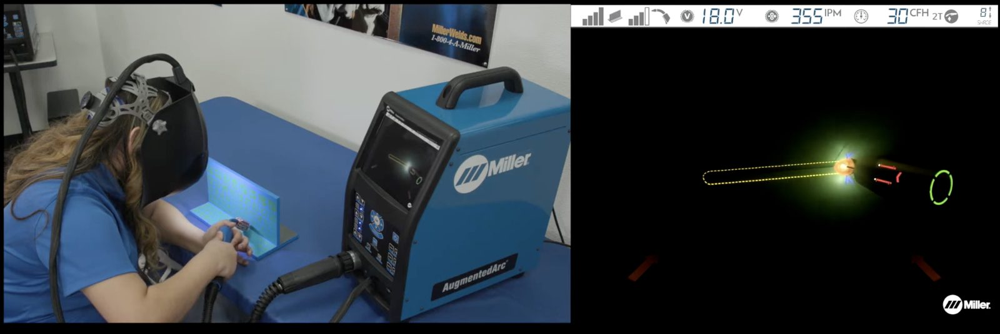
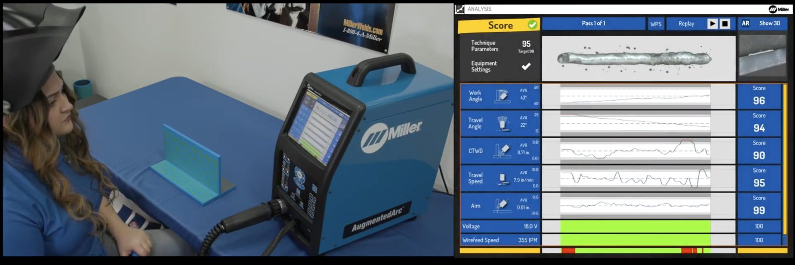

Unit objective
Using the provided AR System Evaluation, evaluate an AR welding training system for fit with your existing welding theory and lab practices, completing every section.
Placeholder: In development. Topics 3 to 5 to be written.
What an AR welding session is and what it produces
What it looks like at the booth
AR welding is a simulation, but it isn’t all on a screen. The student holds a training gun, wears a helmet, and welds on a practice piece shaped like a real joint. Inside the helmet, the system lays a computer-generated arc, puddle, and bead over that practice piece, so the weld looks and feels close to the real thing.
The goal is to get as close to live welding as possible without the hazards. There’s no arc, no heat, and no fumes. And because nothing burns, students can run the same joint again and again without using up steel coupons.
That makes AR a place to build the foundation: hand-eye coordination, steady travel speed, consistent angles. Those are the habits you want students to carry into the booth when they strike their first real arc.

Read the video description
This video has music and no narration, so it has no transcript. This description covers what is shown and all on-screen text.
The video opens with the line “Designed by Welders for Welders.” A student in an indoor setting uses the AugmentedArc training system. The video switches between the student’s simulated welding and live arc welding. Short clips show AugmentedArc features, along with under-the-hood views of the simulated weld as it takes place.
On-screen banners appear in this order:
- “Classrooms Become Workshops”
- “Builds Muscle Memory”
- “Builds Efficiency and Accuracy”
- “Builds a More Skilled Workforce”
- “Transforming Tomorrow’s Welders with Today’s Technology”
The final banner reads “AugmentedArc Augmented Reality Welding System.” Music plays throughout.
One session, start to finish
A session has three steps.
- Set up. Choose the exercise: the joint, position, process, and filler. You can also choose whether the on-screen guides are turned on.
- Weld. The student welds the practice piece. Guides in the helmet turn red when technique drifts and green when it’s back on track.
- Review. When the joint is filled, the system scores the weld and offers a replay.
After the helmet comes off
When a student finishes a session, start with the student, not the screen. Ask how it went. Was anything frustrating or confusing? Do they have questions about the equipment?
Then look at what the system recorded:
- An overall score, compared with a target score
- A score for each part of technique: work angle, travel angle, contact-tip-to-work distance, travel speed, and aim
- A graph of each one across the length of the weld
- A replay of the weld
- A saved record of every attempt

You don’t need to read all of that yet. Unit 2 walks through it step by step. For now, know that every session gives you two things to work with: what the student tells you, and what the system recorded.
Try it
Two sources
After a session, where does each of these come from?
What AR simulation supplements, and what it cannot replace
AR simulation supplements live welding. It doesn’t replace it.
What the simulator does well. It lets students learn the basic movements of welding (angles, travel speed, distance to the work) without the hazards. They can run the same joint as many times as they need, and you can see the results each time.
What only live welding teaches.
- The feel of the wire or electrode melting into the puddle, and the heat the weld puts out
- Working on real equipment, the same kind they’ll use once they’re employed
- Expecting sparks, spatter, and other hazards, and building safe habits around them
- Welding the way the job is done, in a shop or out in the field during installation
The simulator can’t recreate the hazards that are common in fabrication work. That’s what makes it useful, and it’s also its limit. Students still need booth time to learn to work safely around a live arc.
Where the line falls
Use the simulator for the first steps. A beginning student can find a comfortable body position, learn to hold the gun at the right distance from the work, and practice where to start on the joint. From there, they can work on the basic motion of a fillet weld in the horizontal position.
Save advanced techniques, and practice for welding tests to a specific code, for the live booth. The simulator may not have the hardware for those weldments.
Try it
Simulator first, or the live booth?
For a beginning student, where does each of these belong?
Reading vendor materials
Placeholder. Lesson text for this topic is in development.
Worked example for this lesson: Miller’s AugmentedArc infographic (PDF, opens on Miller’s website).
| Measure | Traditional training | With AugmentedArc |
|---|---|---|
| Cost per student | $225 | $89 |
| Training hours per student, per semester | 483 | 170 |
| Material waste on coupons | — | 60% reduction claimed |
Attributed to a 2018 Gateway Technical College study overview: 20 novice welders in two groups, across 22 live welding exercises. No methodology, sample details, or published source is cited.
Placeholder. Discussion questions in development. This lesson asks what an instructor would need to know before trusting these figures.
Setting your operational goal and your instructional goal
Placeholder. Lesson text for this topic is in development.
Working through the AR System Evaluation
Placeholder. Lesson text for this topic is in development.